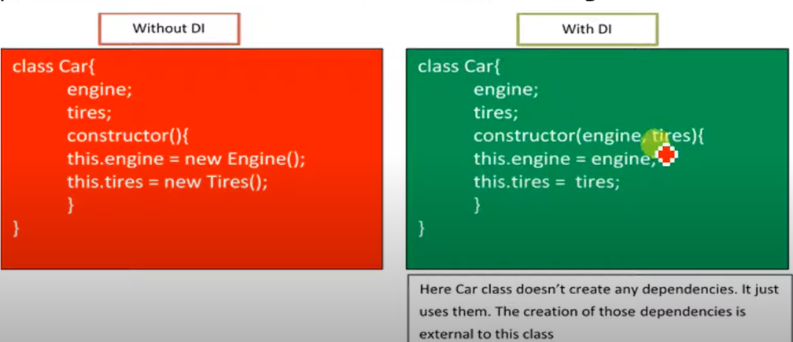
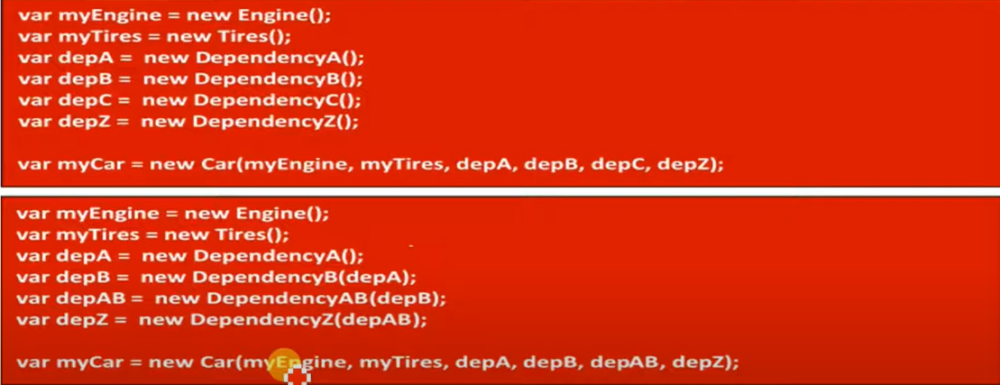

Dependency Injection
- Dependency Injection is a coding pattern in which a class receives its dependencies from external source rather than creating them itself.

- In the above example, Car has only two dependencies(Engine and Tires).
- Suppose car ha 10 or 20 or 30 or 40 ...... Dependencies, the above type of code is USELESS.

- In this case it becomes extreme difficulty for the developer.
- Here, Angular Dependency injection as Framework comes into picture.
DI as a framework:
- Injector has to register all dependencies. That means injector is like a Container for all dependencies.